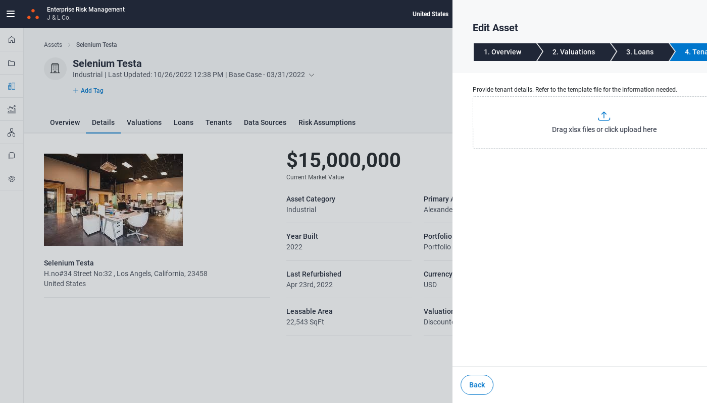
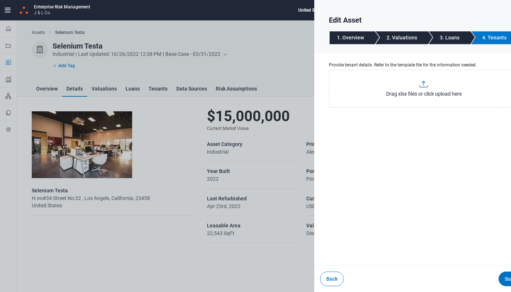
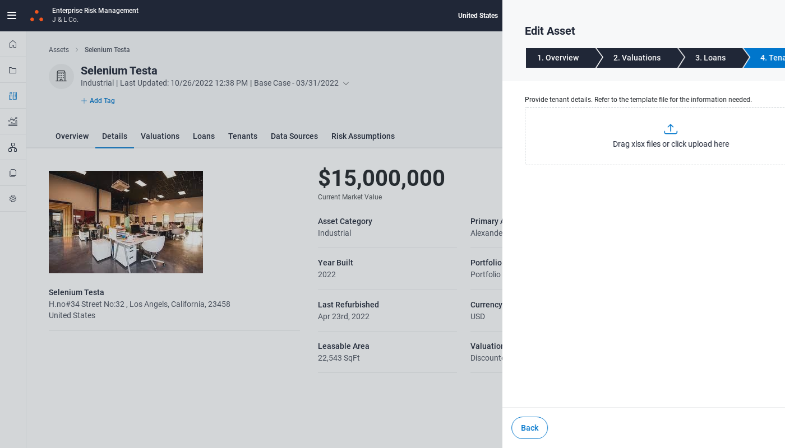
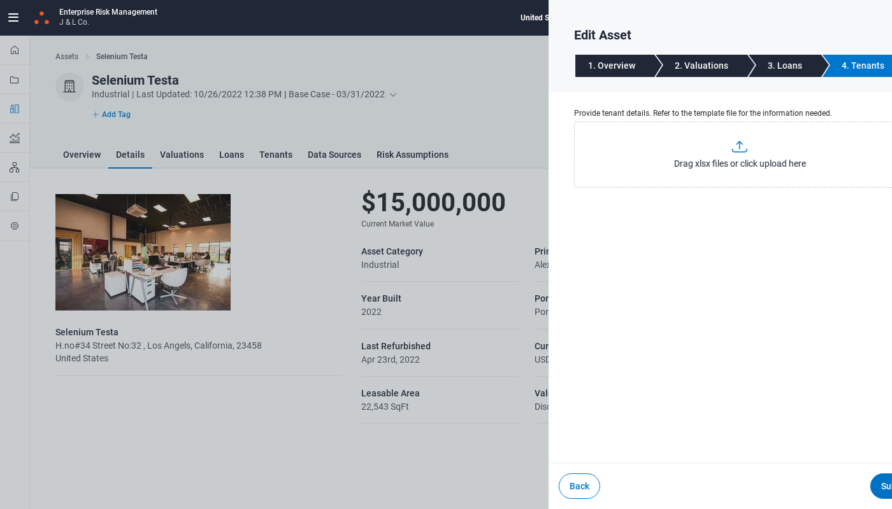

Started
Oct 26, 2022 02:36:22 PM
Ended
Oct 26, 2022 02:50:37 PM
Features Passed
0
Features Failed
1
Features
Scenarios
Steps
Timeline
-
EditAssetPage
14:36:24 PM / 00:14:13:409 Fail
EditAssetPage
10.26.2022 14:36:24 10.26.2022 14:50:37 00:14:13:409 · #test-id=1FailEditAssetPageFailEditAssetPageapphooks.ApplicationHooks.launchBrowser()Given Opens RealPage and user clicks on properties goes to a particular asset "Selenium Testa"Step skippedWhen clicks on edit button and edit the values "" "" "" "" "" "" "23458" "" "" "" "" "" "" "" "" "" "" "" "" ""Step skippedThen check the updated values "" "" "" "" "" "" "23458" "" "" "" "" "" "" "" "" "" "" "" "" "" "Successfully Updated Asset Details"Step skippedapphooks.ApplicationHooks.tearDown(io.cucumber.java.Scenario)EditAssetPage FailEditAssetPageapphooks.ApplicationHooks.launchBrowser()Given Opens RealPage and user clicks on properties goes to a particular asset "Selenium Testa"Step skippedWhen clicks on edit button and edit the values "" "" "" "" "" "" "23458" "" "" "" "" "" "" "" "" "" "" "" "" ""Step skippedThen check the updated values "" "" "" "" "" "" "23458" "" "" "" "" "" "" "" "" "" "" "" "" "" "Successfully Updated Asset Details"Step skippedapphooks.ApplicationHooks.tearDown(io.cucumber.java.Scenario)EditAssetPage
FailEditAssetPageapphooks.ApplicationHooks.launchBrowser()Given Opens RealPage and user clicks on properties goes to a particular asset "Selenium Testa"Step skippedWhen clicks on edit button and edit the values "" "" "" "" "" "" "23458" "" "" "" "" "" "" "" "" "" "" "" "" ""Step skippedThen check the updated values "" "" "" "" "" "" "23458" "" "" "" "" "" "" "" "" "" "" "" "" "" "Successfully Updated Asset Details"Step skippedapphooks.ApplicationHooks.tearDown(io.cucumber.java.Scenario)EditAssetPage FailEditAssetPageapphooks.ApplicationHooks.launchBrowser()Given Opens RealPage and user clicks on properties goes to a particular asset "Selenium Testa"Step skippedWhen clicks on edit button and edit the values "" "" "" "" "" "" "23458" "" "" "" "" "" "" "" "" "" "" "" "" ""Step skippedThen check the updated values "" "" "" "" "" "" "23458" "" "" "" "" "" "" "" "" "" "" "" "" "" "Successfully Updated Asset Details"Step skippedapphooks.ApplicationHooks.tearDown(io.cucumber.java.Scenario)EditAssetPage
FailEditAssetPageapphooks.ApplicationHooks.launchBrowser()Given Opens RealPage and user clicks on properties goes to a particular asset "Selenium Testa"Step skippedWhen clicks on edit button and edit the values "" "" "" "" "" "" "23458" "" "" "" "" "" "" "" "" "" "" "" "" ""Step skippedThen check the updated values "" "" "" "" "" "" "23458" "" "" "" "" "" "" "" "" "" "" "" "" "" "Successfully Updated Asset Details"Step skippedapphooks.ApplicationHooks.tearDown(io.cucumber.java.Scenario)EditAssetPage FailEditAssetPageapphooks.ApplicationHooks.launchBrowser()Given Opens RealPage and user clicks on properties goes to a particular asset "Selenium Testa"Step skippedWhen clicks on edit button and edit the values "" "" "" "" "" "" "23458" "" "" "" "" "" "" "" "" "" "" "" "" ""Step skippedThen check the updated values "" "" "" "" "" "" "23458" "" "" "" "" "" "" "" "" "" "" "" "" "" "Successfully Updated Asset Details"Step skippedapphooks.ApplicationHooks.tearDown(io.cucumber.java.Scenario)EditAssetPage
FailEditAssetPageapphooks.ApplicationHooks.launchBrowser()Given Opens RealPage and user clicks on properties goes to a particular asset "Selenium Testa"Step skippedWhen clicks on edit button and edit the values "" "" "" "" "" "" "23458" "" "" "" "" "" "" "" "" "" "" "" "" ""Step skippedThen check the updated values "" "" "" "" "" "" "23458" "" "" "" "" "" "" "" "" "" "" "" "" "" "Successfully Updated Asset Details"Step skippedapphooks.ApplicationHooks.tearDown(io.cucumber.java.Scenario)EditAssetPage FailEditAssetPageapphooks.ApplicationHooks.launchBrowser()Given Opens RealPage and user clicks on properties goes to a particular asset "Selenium Testa"Step skippedWhen clicks on edit button and edit the values "" "" "" "" "" "" "23458" "" "" "" "" "" "" "" "" "" "" "" "" ""Step skippedThen check the updated values "" "" "" "" "" "" "23458" "" "" "" "" "" "" "" "" "" "" "" "" "" "Successfully Updated Asset Details"Step skippedapphooks.ApplicationHooks.tearDown(io.cucumber.java.Scenario)EditAssetPage
FailEditAssetPageapphooks.ApplicationHooks.launchBrowser()Given Opens RealPage and user clicks on properties goes to a particular asset "Selenium Testa"Step skippedWhen clicks on edit button and edit the values "" "" "" "" "" "" "23458" "" "" "" "" "" "" "" "" "" "" "" "" ""Step skippedThen check the updated values "" "" "" "" "" "" "23458" "" "" "" "" "" "" "" "" "" "" "" "" "" "Successfully Updated Asset Details"Step skippedapphooks.ApplicationHooks.tearDown(io.cucumber.java.Scenario)EditAssetPage FailEditAssetPageapphooks.ApplicationHooks.launchBrowser()Given Opens RealPage and user clicks on properties goes to a particular asset "Selenium Testa"Step skippedWhen clicks on edit button and edit the values "" "" "" "" "" "" "23458" "" "" "" "" "" "" "" "" "" "" "" "" ""Step skippedThen check the updated values "" "" "" "" "" "" "23458" "" "" "" "" "" "" "" "" "" "" "" "" "" "Successfully Updated Asset Details"Step skippedapphooks.ApplicationHooks.tearDown(io.cucumber.java.Scenario)EditAssetPage
FailEditAssetPageapphooks.ApplicationHooks.launchBrowser()Given Opens RealPage and user clicks on properties goes to a particular asset "Selenium Testa"Step skippedWhen clicks on edit button and edit the values "" "" "" "" "" "" "23458" "" "" "" "" "" "" "" "" "" "" "" "" ""Step skippedThen check the updated values "" "" "" "" "" "" "23458" "" "" "" "" "" "" "" "" "" "" "" "" "" "Successfully Updated Asset Details"Step skippedapphooks.ApplicationHooks.tearDown(io.cucumber.java.Scenario)EditAssetPage FailEditAssetPageapphooks.ApplicationHooks.launchBrowser()Given Opens RealPage and user clicks on properties goes to a particular asset "Selenium Testa"Step skippedWhen clicks on edit button and edit the values "" "" "" "" "" "" "23458" "" "" "" "" "" "" "" "" "" "" "" "" ""Step skippedThen check the updated values "" "" "" "" "" "" "23458" "" "" "" "" "" "" "" "" "" "" "" "" "" "Successfully Updated Asset Details"Step skippedapphooks.ApplicationHooks.tearDown(io.cucumber.java.Scenario)EditAssetPage
FailEditAssetPageapphooks.ApplicationHooks.launchBrowser()Given Opens RealPage and user clicks on properties goes to a particular asset "Selenium Testa"Step skippedWhen clicks on edit button and edit the values "" "" "" "" "" "" "23458" "" "" "" "" "" "" "" "" "" "" "" "" ""Step skippedThen check the updated values "" "" "" "" "" "" "23458" "" "" "" "" "" "" "" "" "" "" "" "" "" "Successfully Updated Asset Details"Step skippedapphooks.ApplicationHooks.tearDown(io.cucumber.java.Scenario)EditAssetPage FailEditAssetPageapphooks.ApplicationHooks.launchBrowser()Given Opens RealPage and user clicks on properties goes to a particular asset "Selenium Testa"Step skippedWhen clicks on edit button and edit the values "" "" "" "" "" "" "23458" "" "" "" "" "" "" "" "" "" "" "" "" ""Step skippedThen check the updated values "" "" "" "" "" "" "23458" "" "" "" "" "" "" "" "" "" "" "" "" "" "Successfully Updated Asset Details"Step skippedapphooks.ApplicationHooks.tearDown(io.cucumber.java.Scenario)EditAssetPage
FailEditAssetPageapphooks.ApplicationHooks.launchBrowser()Given Opens RealPage and user clicks on properties goes to a particular asset "Selenium Testa"Step skippedWhen clicks on edit button and edit the values "" "" "" "" "" "" "23458" "" "" "" "" "" "" "" "" "" "" "" "" ""Step skippedThen check the updated values "" "" "" "" "" "" "23458" "" "" "" "" "" "" "" "" "" "" "" "" "" "Successfully Updated Asset Details"Step skippedapphooks.ApplicationHooks.tearDown(io.cucumber.java.Scenario)EditAssetPage FailEditAssetPageapphooks.ApplicationHooks.launchBrowser()Given Opens RealPage and user clicks on properties goes to a particular asset "Selenium Testa"Step skippedWhen clicks on edit button and edit the values "" "" "" "" "" "" "23458" "" "" "" "" "" "" "" "" "" "" "" "" ""Step skippedThen check the updated values "" "" "" "" "" "" "23458" "" "" "" "" "" "" "" "" "" "" "" "" "" "Successfully Updated Asset Details"Step skippedapphooks.ApplicationHooks.tearDown(io.cucumber.java.Scenario)EditAssetPage
FailEditAssetPageapphooks.ApplicationHooks.launchBrowser()Given Opens RealPage and user clicks on properties goes to a particular asset "Selenium Testa"Step skippedWhen clicks on edit button and edit the values "" "" "" "" "" "" "23458" "" "" "" "" "" "" "" "" "" "" "" "" ""Step skippedThen check the updated values "" "" "" "" "" "" "23458" "" "" "" "" "" "" "" "" "" "" "" "" "" "Successfully Updated Asset Details"Step skippedapphooks.ApplicationHooks.tearDown(io.cucumber.java.Scenario)EditAssetPage FailEditAssetPageapphooks.ApplicationHooks.launchBrowser()Given Opens RealPage and user clicks on properties goes to a particular asset "Selenium Testa"Step skippedWhen clicks on edit button and edit the values "" "" "" "" "" "" "23458" "" "" "" "" "" "" "" "" "" "" "" "" ""Step skippedThen check the updated values "" "" "" "" "" "" "23458" "" "" "" "" "" "" "" "" "" "" "" "" "" "Successfully Updated Asset Details"Step skippedapphooks.ApplicationHooks.tearDown(io.cucumber.java.Scenario)EditAssetPage
FailEditAssetPageapphooks.ApplicationHooks.launchBrowser()Given Opens RealPage and user clicks on properties goes to a particular asset "Selenium Testa"Step skippedWhen clicks on edit button and edit the values "" "" "" "" "" "" "23458" "" "" "" "" "" "" "" "" "" "" "" "" ""Step skippedThen check the updated values "" "" "" "" "" "" "23458" "" "" "" "" "" "" "" "" "" "" "" "" "" "Successfully Updated Asset Details"Step skippedapphooks.ApplicationHooks.tearDown(io.cucumber.java.Scenario)EditAssetPage FailEditAssetPageapphooks.ApplicationHooks.launchBrowser()Given Opens RealPage and user clicks on properties goes to a particular asset "Selenium Testa"Step skippedWhen clicks on edit button and edit the values "" "" "" "" "" "" "23458" "" "" "" "" "" "" "" "" "" "" "" "" ""Step skippedThen check the updated values "" "" "" "" "" "" "23458" "" "" "" "" "" "" "" "" "" "" "" "" "" "Successfully Updated Asset Details"Step skippedapphooks.ApplicationHooks.tearDown(io.cucumber.java.Scenario)EditAssetPage
FailEditAssetPageapphooks.ApplicationHooks.launchBrowser()Given Opens RealPage and user clicks on properties goes to a particular asset "Selenium Testa"Step skippedWhen clicks on edit button and edit the values "" "" "" "" "" "" "23458" "" "" "" "" "" "" "" "" "" "" "" "" ""Step skippedThen check the updated values "" "" "" "" "" "" "23458" "" "" "" "" "" "" "" "" "" "" "" "" "" "Successfully Updated Asset Details"Step skippedapphooks.ApplicationHooks.tearDown(io.cucumber.java.Scenario)EditAssetPage FailEditAssetPageapphooks.ApplicationHooks.launchBrowser()Given Opens RealPage and user clicks on properties goes to a particular asset "Selenium Testa"Step skippedWhen clicks on edit button and edit the values "" "" "" "" "" "" "23458" "" "" "" "" "" "" "" "" "" "" "" "" ""Step skippedThen check the updated values "" "" "" "" "" "" "23458" "" "" "" "" "" "" "" "" "" "" "" "" "" "Successfully Updated Asset Details"Step skippedapphooks.ApplicationHooks.tearDown(io.cucumber.java.Scenario)EditAssetPage
FailEditAssetPageapphooks.ApplicationHooks.launchBrowser()Given Opens RealPage and user clicks on properties goes to a particular asset "Selenium Testa"Step skippedWhen clicks on edit button and edit the values "" "" "" "" "" "" "23458" "" "" "" "" "" "" "" "" "" "" "" "" ""Step skippedThen check the updated values "" "" "" "" "" "" "23458" "" "" "" "" "" "" "" "" "" "" "" "" "" "Successfully Updated Asset Details"Step skippedapphooks.ApplicationHooks.tearDown(io.cucumber.java.Scenario)EditAssetPage FailEditAssetPageapphooks.ApplicationHooks.launchBrowser()Given Opens RealPage and user clicks on properties goes to a particular asset "Selenium Testa"Step skippedWhen clicks on edit button and edit the values "" "" "" "" "" "" "23458" "" "" "" "" "" "" "" "" "" "" "" "" ""Step skippedThen check the updated values "" "" "" "" "" "" "23458" "" "" "" "" "" "" "" "" "" "" "" "" "" "Successfully Updated Asset Details"Step skippedapphooks.ApplicationHooks.tearDown(io.cucumber.java.Scenario)EditAssetPage
FailEditAssetPageapphooks.ApplicationHooks.launchBrowser()Given Opens RealPage and user clicks on properties goes to a particular asset "Selenium Testa"Step skippedWhen clicks on edit button and edit the values "" "" "" "" "" "" "23458" "" "" "" "" "" "" "" "" "" "" "" "" ""Step skippedThen check the updated values "" "" "" "" "" "" "23458" "" "" "" "" "" "" "" "" "" "" "" "" "" "Successfully Updated Asset Details"Step skippedapphooks.ApplicationHooks.tearDown(io.cucumber.java.Scenario)EditAssetPage FailEditAssetPageapphooks.ApplicationHooks.launchBrowser()Given Opens RealPage and user clicks on properties goes to a particular asset "Selenium Testa"Step skippedWhen clicks on edit button and edit the values "" "" "" "" "" "" "23458" "" "" "" "" "" "" "" "" "" "" "" "" ""Step skippedThen check the updated values "" "" "" "" "" "" "23458" "" "" "" "" "" "" "" "" "" "" "" "" "" "Successfully Updated Asset Details"Step skippedapphooks.ApplicationHooks.tearDown(io.cucumber.java.Scenario)EditAssetPage
FailEditAssetPageapphooks.ApplicationHooks.launchBrowser()Given Opens RealPage and user clicks on properties goes to a particular asset "Selenium Testa"Step skippedWhen clicks on edit button and edit the values "" "" "" "" "" "" "23458" "" "" "" "" "" "" "" "" "" "" "" "" ""Step skippedThen check the updated values "" "" "" "" "" "" "23458" "" "" "" "" "" "" "" "" "" "" "" "" "" "Successfully Updated Asset Details"Step skippedapphooks.ApplicationHooks.tearDown(io.cucumber.java.Scenario)EditAssetPage PassEditAssetPageGiven Opens RealPage and user clicks on properties goes to a particular asset "Selenium Testa"When clicks on edit button and edit the values "" "" "" "" "" "" "23458" "" "" "" "" "" "" "" "" "" "" "" "" ""Then check the updated values "" "" "" "" "" "" "23458" "" "" "" "" "" "" "" "" "" "" "" "" "" "Successfully Updated Asset Details"FailEditAssetPageapphooks.ApplicationHooks.launchBrowser()Given Opens RealPage and user clicks on properties goes to a particular asset "Selenium Testa"Step skippedWhen clicks on edit button and edit the values "" "" "" "" "" "" "23458" "" "" "" "" "" "" "" "" "" "" "" "" ""Step skippedThen check the updated values "" "" "" "" "" "" "23458" "" "" "" "" "" "" "" "" "" "" "" "" "" "Successfully Updated Asset Details"Step skippedapphooks.ApplicationHooks.tearDown(io.cucumber.java.Scenario)EditAssetPageFailEditAssetPageapphooks.ApplicationHooks.launchBrowser()Given Opens RealPage and user clicks on properties goes to a particular asset "Selenium Testa"Step skippedWhen clicks on edit button and edit the values "" "" "" "" "" "" "23458" "" "" "" "" "" "" "" "" "" "" "" "" ""Step skippedThen check the updated values "" "" "" "" "" "" "23458" "" "" "" "" "" "" "" "" "" "" "" "" "" "Successfully Updated Asset Details"Step skippedapphooks.ApplicationHooks.tearDown(io.cucumber.java.Scenario)EditAssetPage
PassEditAssetPageGiven Opens RealPage and user clicks on properties goes to a particular asset "Selenium Testa"When clicks on edit button and edit the values "" "" "" "" "" "" "23458" "" "" "" "" "" "" "" "" "" "" "" "" ""Then check the updated values "" "" "" "" "" "" "23458" "" "" "" "" "" "" "" "" "" "" "" "" "" "Successfully Updated Asset Details"FailEditAssetPageapphooks.ApplicationHooks.launchBrowser()Given Opens RealPage and user clicks on properties goes to a particular asset "Selenium Testa"Step skippedWhen clicks on edit button and edit the values "" "" "" "" "" "" "23458" "" "" "" "" "" "" "" "" "" "" "" "" ""Step skippedThen check the updated values "" "" "" "" "" "" "23458" "" "" "" "" "" "" "" "" "" "" "" "" "" "Successfully Updated Asset Details"Step skippedapphooks.ApplicationHooks.tearDown(io.cucumber.java.Scenario)EditAssetPageFailEditAssetPageapphooks.ApplicationHooks.launchBrowser()Given Opens RealPage and user clicks on properties goes to a particular asset "Selenium Testa"Step skippedWhen clicks on edit button and edit the values "" "" "" "" "" "" "23458" "" "" "" "" "" "" "" "" "" "" "" "" ""Step skippedThen check the updated values "" "" "" "" "" "" "23458" "" "" "" "" "" "" "" "" "" "" "" "" "" "Successfully Updated Asset Details"Step skippedapphooks.ApplicationHooks.tearDown(io.cucumber.java.Scenario)EditAssetPage FailEditAssetPageapphooks.ApplicationHooks.launchBrowser()Given Opens RealPage and user clicks on properties goes to a particular asset "Selenium Testa"Step skippedWhen clicks on edit button and edit the values "" "" "" "" "" "" "23458" "" "" "" "" "" "" "" "" "" "" "" "" ""Step skippedThen check the updated values "" "" "" "" "" "" "23458" "" "" "" "" "" "" "" "" "" "" "" "" "" "Successfully Updated Asset Details"Step skippedapphooks.ApplicationHooks.tearDown(io.cucumber.java.Scenario)EditAssetPage
FailEditAssetPageapphooks.ApplicationHooks.launchBrowser()Given Opens RealPage and user clicks on properties goes to a particular asset "Selenium Testa"Step skippedWhen clicks on edit button and edit the values "" "" "" "" "" "" "23458" "" "" "" "" "" "" "" "" "" "" "" "" ""Step skippedThen check the updated values "" "" "" "" "" "" "23458" "" "" "" "" "" "" "" "" "" "" "" "" "" "Successfully Updated Asset Details"Step skippedapphooks.ApplicationHooks.tearDown(io.cucumber.java.Scenario)EditAssetPage FailEditAssetPageapphooks.ApplicationHooks.launchBrowser()Given Opens RealPage and user clicks on properties goes to a particular asset "Selenium Testa"Step skippedWhen clicks on edit button and edit the values "" "" "" "" "" "" "23458" "" "" "" "" "" "" "" "" "" "" "" "" ""Step skippedThen check the updated values "" "" "" "" "" "" "23458" "" "" "" "" "" "" "" "" "" "" "" "" "" "Successfully Updated Asset Details"Step skippedapphooks.ApplicationHooks.tearDown(io.cucumber.java.Scenario)EditAssetPage
FailEditAssetPageapphooks.ApplicationHooks.launchBrowser()Given Opens RealPage and user clicks on properties goes to a particular asset "Selenium Testa"Step skippedWhen clicks on edit button and edit the values "" "" "" "" "" "" "23458" "" "" "" "" "" "" "" "" "" "" "" "" ""Step skippedThen check the updated values "" "" "" "" "" "" "23458" "" "" "" "" "" "" "" "" "" "" "" "" "" "Successfully Updated Asset Details"Step skippedapphooks.ApplicationHooks.tearDown(io.cucumber.java.Scenario)EditAssetPage FailEditAssetPageapphooks.ApplicationHooks.launchBrowser()Given Opens RealPage and user clicks on properties goes to a particular asset "Selenium Testa"Step skippedWhen clicks on edit button and edit the values "" "" "" "" "" "" "23458" "" "" "" "" "" "" "" "" "" "" "" "" ""Step skippedThen check the updated values "" "" "" "" "" "" "23458" "" "" "" "" "" "" "" "" "" "" "" "" "" "Successfully Updated Asset Details"Step skippedapphooks.ApplicationHooks.tearDown(io.cucumber.java.Scenario)EditAssetPage
FailEditAssetPageapphooks.ApplicationHooks.launchBrowser()Given Opens RealPage and user clicks on properties goes to a particular asset "Selenium Testa"Step skippedWhen clicks on edit button and edit the values "" "" "" "" "" "" "23458" "" "" "" "" "" "" "" "" "" "" "" "" ""Step skippedThen check the updated values "" "" "" "" "" "" "23458" "" "" "" "" "" "" "" "" "" "" "" "" "" "Successfully Updated Asset Details"Step skippedapphooks.ApplicationHooks.tearDown(io.cucumber.java.Scenario)EditAssetPage PassEditAssetPageGiven Opens RealPage and user clicks on properties goes to a particular asset "Selenium Testa"When clicks on edit button and edit the values "" "" "" "" "" "" "23458" "" "" "" "" "" "" "" "" "" "" "" "" ""Then check the updated values "" "" "" "" "" "" "23458" "" "" "" "" "" "" "" "" "" "" "" "" "" "Successfully Updated Asset Details"PassEditAssetPageGiven Opens RealPage and user clicks on properties goes to a particular asset "Selenium Testa"When clicks on edit button and edit the values "" "" "" "" "" "" "23458" "" "" "" "" "" "" "" "" "" "" "" "" ""Then check the updated values "" "" "" "" "" "" "23458" "" "" "" "" "" "" "" "" "" "" "" "" "" "Successfully Updated Asset Details"PassEditAssetPageGiven Opens RealPage and user clicks on properties goes to a particular asset "Selenium Testa"When clicks on edit button and edit the values "" "" "" "" "" "" "23458" "" "" "" "" "" "" "" "" "" "" "" "" ""Then check the updated values "" "" "" "" "" "" "23458" "" "" "" "" "" "" "" "" "" "" "" "" "" "Successfully Updated Asset Details"PassEditAssetPageGiven Opens RealPage and user clicks on properties goes to a particular asset "Selenium Testa"When clicks on edit button and edit the values "" "" "" "" "" "" "23458" "" "" "" "" "" "" "" "" "" "" "" "" ""Then check the updated values "" "" "" "" "" "" "23458" "" "" "" "" "" "" "" "" "" "" "" "" "" "Successfully Updated Asset Details"PassEditAssetPageGiven Opens RealPage and user clicks on properties goes to a particular asset "Selenium Testa"When clicks on edit button and edit the values "" "" "" "" "" "" "23458" "" "" "" "" "" "" "" "" "" "" "" "" ""Then check the updated values "" "" "" "" "" "" "23458" "" "" "" "" "" "" "" "" "" "" "" "" "" "Successfully Updated Asset Details"FailEditAssetPageGiven Opens RealPage and user clicks on properties goes to a particular asset "Selenium Testa"When clicks on edit button and edit the values "" "" "" "" "" "" "23458" "" "" "" "" "" "" "" "" "" "" "" "" ""Then check the updated values "" "" "" "" "" "" "23458" "" "" "" "" "" "" "" "" "" "" "" "" "" "Successfully Updated Asset Details"apphooks.ApplicationHooks.tearDown(io.cucumber.java.Scenario)EditAssetPagePassEditAssetPageGiven Opens RealPage and user clicks on properties goes to a particular asset "Selenium Testa"When clicks on edit button and edit the values "" "" "" "" "" "" "23458" "" "" "" "" "" "" "" "" "" "" "" "" ""Then check the updated values "" "" "" "" "" "" "23458" "" "" "" "" "" "" "" "" "" "" "" "" "" "Successfully Updated Asset Details"PassEditAssetPageGiven Opens RealPage and user clicks on properties goes to a particular asset "Selenium Testa"When clicks on edit button and edit the values "" "" "" "" "" "" "23458" "" "" "" "" "" "" "" "" "" "" "" "" ""Then check the updated values "" "" "" "" "" "" "23458" "" "" "" "" "" "" "" "" "" "" "" "" "" "Successfully Updated Asset Details"FailEditAssetPageGiven Opens RealPage and user clicks on properties goes to a particular asset "Selenium Testa"When clicks on edit button and edit the values "" "" "" "" "" "" "23458" "" "" "" "" "" "" "" "" "" "" "" "" ""Then check the updated values "" "" "" "" "" "" "23458" "" "" "" "" "" "" "" "" "" "" "" "" "" "Successfully Updated Asset Details"apphooks.ApplicationHooks.tearDown(io.cucumber.java.Scenario)EditAssetPageFailEditAssetPageGiven Opens RealPage and user clicks on properties goes to a particular asset "Selenium Testa"When clicks on edit button and edit the values "" "" "" "" "" "" "23458" "" "" "" "" "" "" "" "" "" "" "" "" ""Then check the updated values "" "" "" "" "" "" "23458" "" "" "" "" "" "" "" "" "" "" "" "" "" "Successfully Updated Asset Details"apphooks.ApplicationHooks.tearDown(io.cucumber.java.Scenario)EditAssetPagePassEditAssetPageGiven Opens RealPage and user clicks on properties goes to a particular asset "Selenium Testa"When clicks on edit button and edit the values "" "" "" "" "" "" "23458" "" "" "" "" "" "" "" "" "" "" "" "" ""Then check the updated values "" "" "" "" "" "" "23458" "" "" "" "" "" "" "" "" "" "" "" "" "" "Successfully Updated Asset Details"PassEditAssetPageGiven Opens RealPage and user clicks on properties goes to a particular asset "Selenium Testa"When clicks on edit button and edit the values "" "" "" "" "" "" "23458" "" "" "" "" "" "" "" "" "" "" "" "" ""Then check the updated values "" "" "" "" "" "" "23458" "" "" "" "" "" "" "" "" "" "" "" "" "" "Successfully Updated Asset Details"PassEditAssetPageGiven Opens RealPage and user clicks on properties goes to a particular asset "Selenium Testa"When clicks on edit button and edit the values "" "" "" "" "" "" "23458" "" "" "" "" "" "" "" "" "" "" "" "" ""Then check the updated values "" "" "" "" "" "" "23458" "" "" "" "" "" "" "" "" "" "" "" "" "" "Successfully Updated Asset Details"PassEditAssetPageGiven Opens RealPage and user clicks on properties goes to a particular asset "Selenium Testa"When clicks on edit button and edit the values "" "" "" "" "" "" "23458" "" "" "" "" "" "" "" "" "" "" "" "" ""Then check the updated values "" "" "" "" "" "" "23458" "" "" "" "" "" "" "" "" "" "" "" "" "" "Successfully Updated Asset Details"PassEditAssetPageGiven Opens RealPage and user clicks on properties goes to a particular asset "Selenium Testa"When clicks on edit button and edit the values "" "" "" "" "" "" "23458" "" "" "" "" "" "" "" "" "" "" "" "" ""Then check the updated values "" "" "" "" "" "" "23458" "" "" "" "" "" "" "" "" "" "" "" "" "" "Successfully Updated Asset Details"PassEditAssetPageGiven Opens RealPage and user clicks on properties goes to a particular asset "Selenium Testa"When clicks on edit button and edit the values "" "" "" "" "" "" "23458" "" "" "" "" "" "" "" "" "" "" "" "" ""Then check the updated values "" "" "" "" "" "" "23458" "" "" "" "" "" "" "" "" "" "" "" "" "" "Successfully Updated Asset Details"PassEditAssetPageGiven Opens RealPage and user clicks on properties goes to a particular asset "Selenium Testa"When clicks on edit button and edit the values "" "" "" "" "" "" "23458" "" "" "" "" "" "" "" "" "" "" "" "" ""Then check the updated values "" "" "" "" "" "" "23458" "" "" "" "" "" "" "" "" "" "" "" "" "" "Successfully Updated Asset Details"
PassEditAssetPageGiven Opens RealPage and user clicks on properties goes to a particular asset "Selenium Testa"When clicks on edit button and edit the values "" "" "" "" "" "" "23458" "" "" "" "" "" "" "" "" "" "" "" "" ""Then check the updated values "" "" "" "" "" "" "23458" "" "" "" "" "" "" "" "" "" "" "" "" "" "Successfully Updated Asset Details"PassEditAssetPageGiven Opens RealPage and user clicks on properties goes to a particular asset "Selenium Testa"When clicks on edit button and edit the values "" "" "" "" "" "" "23458" "" "" "" "" "" "" "" "" "" "" "" "" ""Then check the updated values "" "" "" "" "" "" "23458" "" "" "" "" "" "" "" "" "" "" "" "" "" "Successfully Updated Asset Details"PassEditAssetPageGiven Opens RealPage and user clicks on properties goes to a particular asset "Selenium Testa"When clicks on edit button and edit the values "" "" "" "" "" "" "23458" "" "" "" "" "" "" "" "" "" "" "" "" ""Then check the updated values "" "" "" "" "" "" "23458" "" "" "" "" "" "" "" "" "" "" "" "" "" "Successfully Updated Asset Details"PassEditAssetPageGiven Opens RealPage and user clicks on properties goes to a particular asset "Selenium Testa"When clicks on edit button and edit the values "" "" "" "" "" "" "23458" "" "" "" "" "" "" "" "" "" "" "" "" ""Then check the updated values "" "" "" "" "" "" "23458" "" "" "" "" "" "" "" "" "" "" "" "" "" "Successfully Updated Asset Details"PassEditAssetPageGiven Opens RealPage and user clicks on properties goes to a particular asset "Selenium Testa"When clicks on edit button and edit the values "" "" "" "" "" "" "23458" "" "" "" "" "" "" "" "" "" "" "" "" ""Then check the updated values "" "" "" "" "" "" "23458" "" "" "" "" "" "" "" "" "" "" "" "" "" "Successfully Updated Asset Details"FailEditAssetPageGiven Opens RealPage and user clicks on properties goes to a particular asset "Selenium Testa"When clicks on edit button and edit the values "" "" "" "" "" "" "23458" "" "" "" "" "" "" "" "" "" "" "" "" ""Then check the updated values "" "" "" "" "" "" "23458" "" "" "" "" "" "" "" "" "" "" "" "" "" "Successfully Updated Asset Details"apphooks.ApplicationHooks.tearDown(io.cucumber.java.Scenario)EditAssetPagePassEditAssetPageGiven Opens RealPage and user clicks on properties goes to a particular asset "Selenium Testa"When clicks on edit button and edit the values "" "" "" "" "" "" "23458" "" "" "" "" "" "" "" "" "" "" "" "" ""Then check the updated values "" "" "" "" "" "" "23458" "" "" "" "" "" "" "" "" "" "" "" "" "" "Successfully Updated Asset Details"PassEditAssetPageGiven Opens RealPage and user clicks on properties goes to a particular asset "Selenium Testa"When clicks on edit button and edit the values "" "" "" "" "" "" "23458" "" "" "" "" "" "" "" "" "" "" "" "" ""Then check the updated values "" "" "" "" "" "" "23458" "" "" "" "" "" "" "" "" "" "" "" "" "" "Successfully Updated Asset Details"FailEditAssetPageGiven Opens RealPage and user clicks on properties goes to a particular asset "Selenium Testa"When clicks on edit button and edit the values "" "" "" "" "" "" "23458" "" "" "" "" "" "" "" "" "" "" "" "" ""Then check the updated values "" "" "" "" "" "" "23458" "" "" "" "" "" "" "" "" "" "" "" "" "" "Successfully Updated Asset Details"apphooks.ApplicationHooks.tearDown(io.cucumber.java.Scenario)EditAssetPageFailEditAssetPageGiven Opens RealPage and user clicks on properties goes to a particular asset "Selenium Testa"When clicks on edit button and edit the values "" "" "" "" "" "" "23458" "" "" "" "" "" "" "" "" "" "" "" "" ""Then check the updated values "" "" "" "" "" "" "23458" "" "" "" "" "" "" "" "" "" "" "" "" "" "Successfully Updated Asset Details"apphooks.ApplicationHooks.tearDown(io.cucumber.java.Scenario)EditAssetPagePassEditAssetPageGiven Opens RealPage and user clicks on properties goes to a particular asset "Selenium Testa"When clicks on edit button and edit the values "" "" "" "" "" "" "23458" "" "" "" "" "" "" "" "" "" "" "" "" ""Then check the updated values "" "" "" "" "" "" "23458" "" "" "" "" "" "" "" "" "" "" "" "" "" "Successfully Updated Asset Details"PassEditAssetPageGiven Opens RealPage and user clicks on properties goes to a particular asset "Selenium Testa"When clicks on edit button and edit the values "" "" "" "" "" "" "23458" "" "" "" "" "" "" "" "" "" "" "" "" ""Then check the updated values "" "" "" "" "" "" "23458" "" "" "" "" "" "" "" "" "" "" "" "" "" "Successfully Updated Asset Details"PassEditAssetPageGiven Opens RealPage and user clicks on properties goes to a particular asset "Selenium Testa"When clicks on edit button and edit the values "" "" "" "" "" "" "23458" "" "" "" "" "" "" "" "" "" "" "" "" ""Then check the updated values "" "" "" "" "" "" "23458" "" "" "" "" "" "" "" "" "" "" "" "" "" "Successfully Updated Asset Details"PassEditAssetPageGiven Opens RealPage and user clicks on properties goes to a particular asset "Selenium Testa"When clicks on edit button and edit the values "" "" "" "" "" "" "23458" "" "" "" "" "" "" "" "" "" "" "" "" ""Then check the updated values "" "" "" "" "" "" "23458" "" "" "" "" "" "" "" "" "" "" "" "" "" "Successfully Updated Asset Details"PassEditAssetPageGiven Opens RealPage and user clicks on properties goes to a particular asset "Selenium Testa"When clicks on edit button and edit the values "" "" "" "" "" "" "23458" "" "" "" "" "" "" "" "" "" "" "" "" ""Then check the updated values "" "" "" "" "" "" "23458" "" "" "" "" "" "" "" "" "" "" "" "" "" "Successfully Updated Asset Details"PassEditAssetPageGiven Opens RealPage and user clicks on properties goes to a particular asset "Selenium Testa"When clicks on edit button and edit the values "" "" "" "" "" "" "23458" "" "" "" "" "" "" "" "" "" "" "" "" ""Then check the updated values "" "" "" "" "" "" "23458" "" "" "" "" "" "" "" "" "" "" "" "" "" "Successfully Updated Asset Details"PassEditAssetPageGiven Opens RealPage and user clicks on properties goes to a particular asset "Selenium Testa"When clicks on edit button and edit the values "" "" "" "" "" "" "23458" "" "" "" "" "" "" "" "" "" "" "" "" ""Then check the updated values "" "" "" "" "" "" "23458" "" "" "" "" "" "" "" "" "" "" "" "" "" "Successfully Updated Asset Details"
-
org.openqa.selenium.remote.UnreachableBrowserException
1 tests
org.openqa.selenium.remote.UnreachableBrowserException
1 failedStatus Timestamp TestName Fail 14:36:24 PM apphooks.ApplicationHooks.launchBrowser() EditAssetPage.EditAssetPage.apphooks.ApplicationHooks.launchBrowser()Fail 14:36:24 PM apphooks.ApplicationHooks.launchBrowser() EditAssetPage.EditAssetPage.apphooks.ApplicationHooks.launchBrowser() -
org.openqa.selenium.TimeoutException
1 tests
org.openqa.selenium.TimeoutException
1 failedStatus Timestamp TestName Fail 14:36:24 PM apphooks.ApplicationHooks.launchBrowser() EditAssetPage.EditAssetPage.apphooks.ApplicationHooks.launchBrowser()Fail 14:36:24 PM apphooks.ApplicationHooks.launchBrowser() EditAssetPage.EditAssetPage.apphooks.ApplicationHooks.launchBrowser()Fail 14:36:24 PM apphooks.ApplicationHooks.launchBrowser() EditAssetPage.EditAssetPage.apphooks.ApplicationHooks.launchBrowser()Fail 14:36:24 PM apphooks.ApplicationHooks.launchBrowser() EditAssetPage.EditAssetPage.apphooks.ApplicationHooks.launchBrowser()Fail 14:36:24 PM apphooks.ApplicationHooks.launchBrowser() EditAssetPage.EditAssetPage.apphooks.ApplicationHooks.launchBrowser()Fail 14:36:24 PM apphooks.ApplicationHooks.launchBrowser() EditAssetPage.EditAssetPage.apphooks.ApplicationHooks.launchBrowser()Fail 14:36:24 PM apphooks.ApplicationHooks.launchBrowser() EditAssetPage.EditAssetPage.apphooks.ApplicationHooks.launchBrowser()Fail 14:36:24 PM apphooks.ApplicationHooks.launchBrowser() EditAssetPage.EditAssetPage.apphooks.ApplicationHooks.launchBrowser()Fail 14:39:44 PM apphooks.ApplicationHooks.launchBrowser() EditAssetPage.EditAssetPage.apphooks.ApplicationHooks.launchBrowser()Fail 14:39:44 PM apphooks.ApplicationHooks.launchBrowser() EditAssetPage.EditAssetPage.apphooks.ApplicationHooks.launchBrowser()Fail 14:39:47 PM apphooks.ApplicationHooks.launchBrowser() EditAssetPage.EditAssetPage.apphooks.ApplicationHooks.launchBrowser()Fail 14:39:50 PM apphooks.ApplicationHooks.launchBrowser() EditAssetPage.EditAssetPage.apphooks.ApplicationHooks.launchBrowser()Fail 14:40:04 PM apphooks.ApplicationHooks.launchBrowser() EditAssetPage.EditAssetPage.apphooks.ApplicationHooks.launchBrowser()Fail 14:40:14 PM apphooks.ApplicationHooks.launchBrowser() EditAssetPage.EditAssetPage.apphooks.ApplicationHooks.launchBrowser()Fail 14:40:17 PM apphooks.ApplicationHooks.launchBrowser() EditAssetPage.EditAssetPage.apphooks.ApplicationHooks.launchBrowser()Fail 14:40:36 PM apphooks.ApplicationHooks.launchBrowser() EditAssetPage.EditAssetPage.apphooks.ApplicationHooks.launchBrowser()Fail 14:40:38 PM apphooks.ApplicationHooks.launchBrowser() EditAssetPage.EditAssetPage.apphooks.ApplicationHooks.launchBrowser()Fail 14:45:32 PM Then check the updated values "" "" "" "" "" "" "23458" "" "" "" "" "" "" "" "" "" "" "" "" "" "Successfully Updated Asset Details" EditAssetPage.EditAssetPage.Then check the updated values "" "" "" "" "" "" "23458" "" "" "" "" "" "" "" "" "" "" "" "" "" "Successfully Updated Asset Details"Fail 14:45:39 PM Then check the updated values "" "" "" "" "" "" "23458" "" "" "" "" "" "" "" "" "" "" "" "" "" "Successfully Updated Asset Details" EditAssetPage.EditAssetPage.Then check the updated values "" "" "" "" "" "" "23458" "" "" "" "" "" "" "" "" "" "" "" "" "" "Successfully Updated Asset Details"Fail 14:45:41 PM Then check the updated values "" "" "" "" "" "" "23458" "" "" "" "" "" "" "" "" "" "" "" "" "" "Successfully Updated Asset Details" EditAssetPage.EditAssetPage.Then check the updated values "" "" "" "" "" "" "23458" "" "" "" "" "" "" "" "" "" "" "" "" "" "Successfully Updated Asset Details"